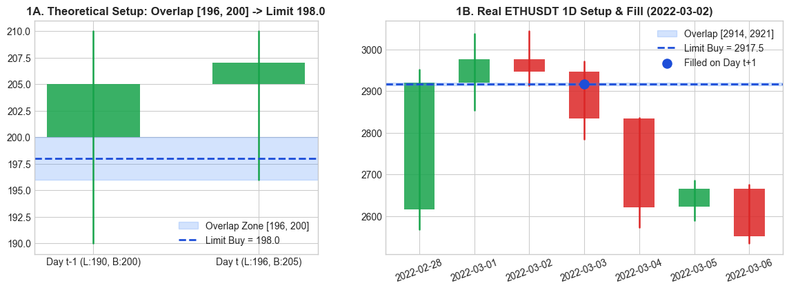
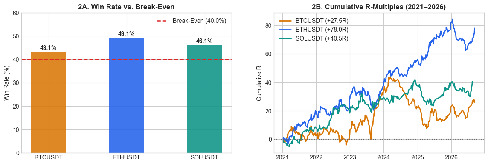
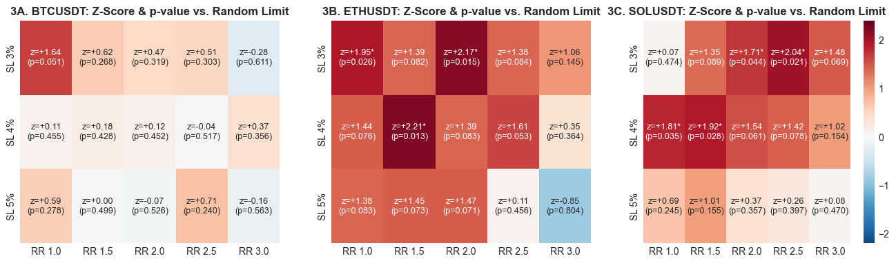
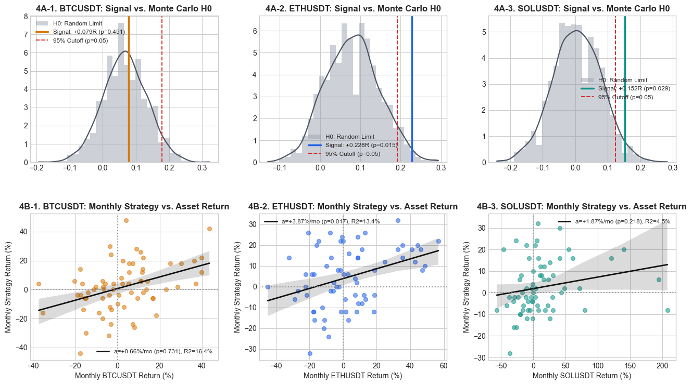

Quantitative Signal Validation: Daily Lower-Wick Overlap vs. Random Noise#
Assets: BTCUSDT, ETHUSDT, SOLUSDT (Daily 1D Bars) | Sample: January 2021 – November 2026 (\(2,141\) daily observations per asset)
Section 1 — Signal Geometry & Wick Conditions#
We test whether placing a resting Limit Buy order at the midpoint of two consecutive daily candles’ overlapping lower wicks generates statistically significant excess return (Alpha) over random entries sharing the exact same stop and target.
For daily candle \(t\), let \(B_t = \min(O_t, C_t)\) denote the bottom of the candle body. The lower wick is the interval \(W_t = [L_t, B_t]\), with relative wick ratio \(w_t = \frac{B_t - L_t}{H_t - L_t}\). Given two consecutive candles \(t-1\) and \(t\), their Overlap Zone is:
A setup triggers at the close of day \(t\) if:
Non-empty intersection: \(\text{Zone}_{\text{high}, t} > \text{Zone}_{\text{low}, t}\)
Meaningful rejection wicks: \(w_{t-1} \ge 0.25\) and \(w_t \ge 0.25\) (each lower wick is at least \(25\%\) of the candle’s
High–Lowrange).
A resting Limit Buy order is placed at the midpoint \(P_{\text{entry}, t} = \frac{\text{Zone}_{\text{low}, t} + \text{Zone}_{\text{high}, t}}{2}\) for up to \(\tau = 3\) days.
import warnings
warnings.filterwarnings('ignore')
import numpy as np
import pandas as pd
import matplotlib.pyplot as plt
import seaborn as sns
from scipy.stats import gaussian_kde, norm
plt.style.use('seaborn-v0_8-whitegrid')
ASSETS = ['BTCUSDT', 'ETHUSDT', 'SOLUSDT']
COLORS = {'BTCUSDT': '#d97706', 'ETHUSDT': '#2563eb', 'SOLUSDT': '#0d9488'}
DATA = {s: pd.read_csv(f"{s.lower()}_1d_2021.csv", index_col='Date', parse_dates=True) for s in ASSETS}
def wick_overlap(df, min_w=0.25):
O, H, L, C = df['Open'].values, df['High'].values, df['Low'].values, df['Close'].values
b = np.minimum(O, C)
pb, pL, pH = np.roll(b, 1), np.roll(L, 1), np.roll(H, 1)
zl, zh = np.maximum(pL, L), np.minimum(pb, b)
w1, w2 = (pb - pL) / np.maximum(pH - pL, 1e-8), (b - L) / np.maximum(H - L, 1e-8)
ok = (pb > pL) & (b > L) & (w1 >= min_w) & (w2 >= min_w) & (zh > zl)
ok[0] = False
return df.assign(zl=np.where(ok, zl, np.nan), zh=np.where(ok, zh, np.nan),
entry=np.where(ok, 0.5 * (zl + zh), np.nan), ok=ok)
def plot_candles(ax, d, title):
for k, (_, r) in enumerate(d.iterrows()):
c = '#16a34a' if r['Close'] >= r['Open'] else '#dc2626'
ax.plot([k, k], [r['Low'], r['High']], color=c, lw=1.8)
ax.add_patch(plt.Rectangle((k - 0.28, min(r['Open'], r['Close'])), 0.56,
max(abs(r['Close'] - r['Open']), (r['High'] - r['Low']) * 0.02), facecolor=c, alpha=0.85))
ax.set_title(title, fontweight='bold')
theo = wick_overlap(pd.DataFrame({'Open':[200.,205.], 'High':[210.,210.], 'Low':[190.,196.], 'Close':[205.,207.]}, index=['Day t-1','Day t']))
eth = wick_overlap(DATA['ETHUSDT'])
idx = [i for i in np.where(eth['ok'])[0][100:-5] if eth['Low'].iloc[i+1] <= eth['entry'].iloc[i] <= eth['Open'].iloc[i+1]][0]
fig, ax = plt.subplots(1, 2, figsize=(14, 4.4), gridspec_kw={'width_ratios': [1, 1.4]})
plot_candles(ax[0], theo, "1A. Theoretical Setup: Overlap [196, 200] -> Limit 198.0")
ax[0].axhspan(196, 200, color='#3b82f6', alpha=0.22, label='Overlap Zone [196, 200]')
ax[0].axhline(198, color='#1d4ed8', ls='--', lw=2, label='Limit Buy = 198.0')
ax[0].set_xticks([0, 1]); ax[0].set_xticklabels(['Day t-1 (L:190, B:200)', 'Day t (L:196, B:205)']); ax[0].legend()
zl, zh, ep = eth[['zl', 'zh', 'entry']].iloc[idx]
plot_candles(ax[1], eth.iloc[idx-2:idx+5], f"1B. Real ETHUSDT 1D Setup & Fill ({eth.index[idx].date()})")
ax[1].axhspan(zl, zh, color='#3b82f6', alpha=0.22, label=f'Overlap [{zl:.0f}, {zh:.0f}]')
ax[1].axhline(ep, color='#1d4ed8', ls='--', lw=2, label=f'Limit Buy = {ep:.1f}')
ax[1].scatter([3], [ep], color='#1d4ed8', s=90, zorder=5, label='Filled on Day t+1')
ax[1].set_xticks(range(7)); ax[1].set_xticklabels([d.strftime('%Y-%m-%d') for d in eth.index[idx-2:idx+5]], rotation=20); ax[1].legend()
plt.show()

Section 2 — Multi-Asset Simulation & Core Metrics (Standalone Event Study)#
Methodology (eval_trades — Pure Event Study):
Because our goal is to validate the statistical predictive power of the signal itself every time it appears—rather than backtesting a capital-constrained portfolio—each entry is evaluated independently (standalone):
When a valid setup triggers on day \(t\) and its limit order is filled on day \(fb \in [t+1, t+3]\), we track that specific trade forward until day \(k\) when it touches either the Stop Loss (\(-4\%\)) or the Take Profit (\(+6\%\)).
If another two-candle wick overlap forms while a previous trade is still open, the new signal is also evaluated independently on its own barrier path.
Every filled trade \(i \in \{1, \dots, N\}\) is measured in risk units (\(1R = s = 4\%\) Stop Loss) with binary payoff \(R_i \in \{-1.0,\ +RR\}\), eliminating compounding distortion.
For a given Risk:Reward ratio \(RR\) (baseline \(RR = 1.5\), Target \(= +6\%\)), the Break-Even Win Rate (\(p_{\text{BE}}\)), Expected Value (\(E[R]\)), and Profit Factor (\(\text{PF}\)) are:
SL, RR = 0.04, 1.5
BE_WR = 1 / (1 + RR)
def eval_trades(df, sl=SL, rr=RR, min_w=0.25, ttl=3, hold=60):
d = wick_overlap(df, min_w)
O, H, L, C, ep_arr = d['Open'].values, d['High'].values, d['Low'].values, d['Close'].values, d['entry'].values
rows = []
for i in np.where(d['ok'].values)[0]:
if i + ttl >= len(d) - hold: continue
ep = ep_arr[i]
fills = [b for b in range(i + 1, i + 1 + ttl) if L[b] <= ep <= O[b]]
if not fills: continue
fb, sl_p, tp_p = fills[0], ep * (1 - sl), ep * (1 + sl * rr)
for k in range(fb, fb + hold):
if L[k] <= sl_p: rows.append((d.index[fb], -1.0, -sl * 100, (C[i] - ep) / C[i])); break
if H[k] >= tp_p: rows.append((d.index[fb], float(rr), rr * sl * 100, (C[i] - ep) / C[i])); break
return pd.DataFrame(rows, columns=['date', 'R', 'ret', 'pb']), int(d['ok'].sum())
TRADES, summary = {}, []
for s in ASSETS:
tdf, n_sig = eval_trades(DATA[s])
TRADES[s] = tdf
wr = (tdf['R'] > 0).mean()
summary.append({'Asset': s, 'Signals': n_sig, 'Fills': len(tdf), 'Fill Rate': f"{len(tdf)/n_sig*100:.1f}%",
'Win Rate': f"{wr*100:.2f}%", 'Break-Even': f"{BE_WR*100:.1f}%", 'WR Edge': f"{(wr-BE_WR)*100:+.2f}%",
'E[R] / Trade': f"{tdf['R'].mean():+.4f} R", 'Total R': f"{tdf['R'].sum():+.1f} R",
'Profit Factor': f"{(wr * RR) / (1 - wr):.2f}"})
fig, ax = plt.subplots(1, 2, figsize=(14, 4.3))
wrs = [(TRADES[s]['R'] > 0).mean() * 100 for s in ASSETS]
bars = ax[0].bar(ASSETS, wrs, width=0.45, color=[COLORS[s] for s in ASSETS], alpha=0.88)
ax[0].axhline(BE_WR * 100, color='#dc2626', ls='--', lw=1.8, label=f'Break-Even ({BE_WR*100:.1f}%)')
for b, w in zip(bars, wrs): ax[0].text(b.get_x() + b.get_width()/2, w + 1, f"{w:.1f}%", ha='center', fontweight='bold')
ax[0].set_ylim(0, 60); ax[0].set_ylabel("Win Rate (%)"); ax[0].set_title("2A. Win Rate vs. Break-Even", fontweight='bold'); ax[0].legend()
for s in ASSETS:
ax[1].plot(TRADES[s]['date'], TRADES[s]['R'].cumsum(), color=COLORS[s], lw=2, label=f"{s} ({TRADES[s]['R'].sum():+.1f}R)")
ax[1].axhline(0, color='#666666', ls=':'); ax[1].set_title("2B. Cumulative R-Multiples (2021–2026)", fontweight='bold')
ax[1].set_ylabel("Cumulative R"); ax[1].legend()
plt.show()
pd.DataFrame(summary).set_index('Asset')

| Signals | Fills | Fill Rate | Win Rate | Break-Even | WR Edge | E[R] / Trade | Total R | Profit Factor | |
|---|---|---|---|---|---|---|---|---|---|
| Asset | |||||||||
| BTCUSDT | 444 | 350 | 78.8% | 43.14% | 40.0% | +3.14% | +0.0786 R | +27.5 R | 1.14 |
| ETHUSDT | 459 | 342 | 74.5% | 49.12% | 40.0% | +9.12% | +0.2281 R | +78.0 R | 1.45 |
| SOLUSDT | 366 | 267 | 73.0% | 46.07% | 40.0% | +6.07% | +0.1517 R | +40.5 R | 1.28 |
Section 3 — Sensitivity Across Risk:Reward Ratios (\(RR\)) & Stop Widths#
To verify that performance is not an artifact of a single parameter choice, we evaluate the signal across \(RR \in \{1.0,\ 1.5,\ 2.0,\ 2.5,\ 3.0\}\) and \(s \in \{3\%,\ 4\%,\ 5\%\}\) against a Random Limit Benchmark (\(H_{0,\text{limit}}\), random limit buy orders placed at the same median pullback depth below the close).
Each cell reports the standardized \(z\)-score (number of standard errors above random noise) and the corresponding one-sided \(p\)-value (\(p = 1 - \Phi(z)\), where \(*\) denotes \(p < 0.05\)):
def random_limit_pool(df, sl, rr, pb, ttl=3, hold=60):
O, H, L, C = df['Open'].values, df['High'].values, df['Low'].values, df['Close'].values
out = []
for j in range(1, len(df) - hold - ttl):
ep = C[j] * (1 - pb)
fills = [b for b in range(j + 1, j + 1 + ttl) if L[b] <= ep <= O[b]]
if not fills: continue
fb, sl_p, tp_p = fills[0], ep * (1 - sl), ep * (1 + sl * rr)
for k in range(fb, fb + hold):
if L[k] <= sl_p: out.append(-1.0); break
if H[k] >= tp_p: out.append(float(rr)); break
return np.array(out)
sl_grid, rr_grid = [0.03, 0.04, 0.05], [1.0, 1.5, 2.0, 2.5, 3.0]
fig, ax = plt.subplots(1, 3, figsize=(16.5, 4.2))
for k, s in enumerate(ASSETS):
z_mat = np.zeros((len(sl_grid), len(rr_grid)))
labels = np.empty_like(z_mat, dtype=object)
for i, sl in enumerate(sl_grid):
for j, rr in enumerate(rr_grid):
tdf, _ = eval_trades(DATA[s], sl, rr)
pool = random_limit_pool(DATA[s], sl, rr, tdf['pb'].median())
z = (tdf['R'].mean() - pool.mean()) / (pool.std() / np.sqrt(len(tdf)))
p = 1.0 - norm.cdf(z)
star = "**" if p < 0.01 else ("*" if p < 0.05 else "")
z_mat[i, j], labels[i, j] = z, f"z={z:+.2f}{star}\n(p={p:.3f})"
sns.heatmap(z_mat, annot=labels, fmt="", cmap="RdBu_r", center=0, vmin=-2.2, vmax=2.4,
xticklabels=[f"RR {r}" for r in rr_grid], yticklabels=[f"SL {int(x*100)}%" for x in sl_grid],
cbar=(k == 2), annot_kws={'size': 9}, ax=ax[k])
ax[k].set_title(f"3{chr(65+k)}. {s}: Z-Score & p-value vs. Random Limit", fontweight='bold')
plt.show()

Section 4 — Validation vs. Random Entries (\(H_0\)) & Monthly OLS Drift Regression#
We conduct two statistical tests to separate genuine Signal Alpha from Random Pullback Noise and Underlying Market Drift:
Monte Carlo Permutation Test (\(H_{0,\text{limit}}\), Top Row):
We simulate \(M = 2,000\) random limit-entry portfolios of size \(N\) with identical stop (\(4\%\)) and target (\(6\%\)). The empirical one-sided \(p\)-value is the fraction of random portfolios that match or exceed our signal’s \(E[R]\):\[p\text{-value} = \frac{1}{M}\sum_{m=1}^M \mathbb{I}\!\left(\bar{R}_{H_0}^{(m)} \ge E[R]_{\text{signal}}\right)\]Monthly Time-Series OLS Regression (Bottom Row):
Because individual barrier trades have binary outcomes (\(-4\%\) or \(+6\%\)), we aggregate strategy returns into continuous monthly returns (\(R_{\text{strat}, m}\)) and regress them against the monthly return of the underlying asset (\(R_{\text{asset}, m}\)) across all calendar months (\(2021\text{–}2026\)):\[R_{\text{strat}, m} = \alpha + \beta \cdot R_{\text{asset}, m} + \varepsilon_m\]Here, \(\beta \cdot \bar{R}_{\text{asset}}\) measures the return explained by passive market drift, while the intercept \(\alpha\) (Monthly Alpha) isolates the strategy’s excess return at zero market drift (\(R_{\text{asset}, m} = 0\)).
rng = np.random.default_rng(42)
rows = []
fig, ax = plt.subplots(2, 3, figsize=(16, 8.6), gridspec_kw={'hspace': 0.35, 'wspace': 0.22})
for k, s in enumerate(ASSETS):
tdf = TRADES[s]
ev = tdf['R'].mean()
pool = random_limit_pool(DATA[s], SL, RR, tdf['pb'].median())
mc = np.array([rng.choice(pool, size=len(tdf), replace=True).mean() for _ in range(2000)])
z_mc, p_mc = (ev - mc.mean()) / mc.std(), (mc >= ev).mean()
m_df = pd.concat([tdf.set_index('date')['ret'].resample('M').sum().rename('y'),
DATA[s]['Close'].resample('M').last().pct_change().mul(100).rename('x')], axis=1).dropna()
y, x = m_df['y'].values, m_df['x'].values
X = np.column_stack([np.ones(len(y)), x])
b = np.linalg.lstsq(X, y, rcond=None)[0]
res = y - X @ b
se = np.sqrt(np.diag(np.linalg.inv(X.T @ X) * np.var(res, ddof=2)))
t_a, p_a = b[0] / se[0], 2 * (1 - norm.cdf(abs(b[0] / se[0])))
r2 = 1 - np.var(res) / np.var(y)
rows.append({'Asset': s, 'Sig E[R]': f"{ev:+.3f}R", 'RndLim E[R]': f"{mc.mean():+.3f}R",
'MC z-score': f"{z_mc:+.2f}", 'MC p-value': f"{p_mc:.4f}", 'Mean Ret/Mo': f"{y.mean():+.2f}%",
'Monthly Alpha (a)': f"{b[0]:+.2f}% (t={t_a:+.2f}, p={p_a:.3f})",
'Drift Explained/Mo': f"{y.mean() - b[0]:+.2f}%", 'Beta': f"{b[1]:.2f}", 'R2 (Drift)': f"{r2*100:.1f}%"})
ax[0, k].hist(mc, bins=30, density=True, color='#9ca3af', alpha=0.5, label='H0: Random Limit')
xs = np.linspace(mc.min(), mc.max(), 200)
ax[0, k].plot(xs, gaussian_kde(mc)(xs), color='#4b5563', lw=1.6)
ax[0, k].axvline(ev, color=COLORS[s], lw=2.5, label=f"Signal: {ev:+.3f}R (p={p_mc:.3f})")
ax[0, k].axvline(np.percentile(mc, 95), color='#dc2626', ls='--', lw=1.4, label='95% Cutoff (p=0.05)')
ax[0, k].set_title(f"4A-{k+1}. {s}: Signal vs. Monte Carlo H0", fontweight='bold'); ax[0, k].legend(fontsize=8.5)
sns.regplot(x=x, y=y, ax=ax[1, k], color=COLORS[s], scatter_kws={'alpha': 0.55, 's': 32},
line_kws={'color': '#111111', 'lw': 2, 'label': f"a={b[0]:+.2f}%/mo (p={p_a:.3f}), R2={r2*100:.1f}%"})
ax[1, k].axhline(0, color='#999999', ls=':'); ax[1, k].axvline(0, color='#999999', ls=':')
ax[1, k].set_title(f"4B-{k+1}. {s}: Monthly Strategy vs. Asset Return", fontweight='bold')
ax[1, k].set_xlabel(f"Monthly {s} Return (%)"); ax[1, k].set_ylabel("Monthly Strategy Return (%)"); ax[1, k].legend(fontsize=8.5)
plt.show()
pd.DataFrame(rows).set_index('Asset')

| Sig E[R] | RndLim E[R] | MC z-score | MC p-value | Mean Ret/Mo | Monthly Alpha (a) | Drift Explained/Mo | Beta | R2 (Drift) | |
|---|---|---|---|---|---|---|---|---|---|
| Asset | |||||||||
| BTCUSDT | +0.079R | +0.067R | +0.18 | 0.4505 | +1.76% | +0.66% (t=+0.34, p=0.731) | +1.11% | 0.40 | 16.4% |
| ETHUSDT | +0.228R | +0.081R | +2.22 | 0.0155 | +4.65% | +3.87% (t=+2.38, p=0.017) | +0.78% | 0.24 | 13.4% |
| SOLUSDT | +0.152R | +0.006R | +1.94 | 0.0290 | +2.54% | +1.87% (t=+1.23, p=0.218) | +0.67% | 0.05 | 4.5% |